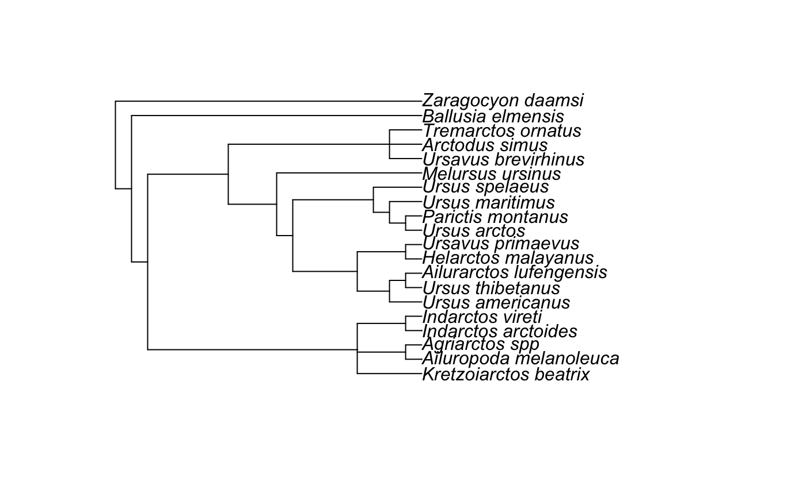

treeStartR
treeStartR is an R package for automated generation of starting trees for total-evidence phylogenetic analyses.
Phylogenetic trees, and particularly time-scaled phylogenetic trees, are increasingly estimated using parameter-rich models of evolution (Lartillot, Lepage, and Blanquart 2009; Wright, Lloyd, and Hillis 2016) and models incorporating macroevoloutionary processes (Heath, Huelsenbeck, and Stadler 2014). Finding a starting tree with a computable likelihood to perform a Bayesian MCMC under these complex models can be a challenge, particularly when when estimation involves many taxa, large datasets, and missing data.
Different phylogenetic estimation packages allow users to find starting trees in different ways, such as estimating a tree under parsimony (Stamatakis (2014)) or neighbor-joining (Bouckaert et al. 2014), randomly adding taxa to the tree (Bouckaert et al. 2014; Stamatakis 2014), or allowing the user to specify the tree. Addition of taxa is usually performed based on data - that is, using an algorithm (such as parsimony or neighbor-joining) to add the tips to the tree. However, in analyses of the fossil record, specimens may be included for which there are no molecular or morphological characters available, but the taxonomy of the specimen is known via expert opinion. This is the case with many specimens harvested via repositories such as the Paleobiology Database.
The purpose of this package is to allow users to efficiently add taxa to a given tree to generate a reasonable starting tree. Functions in this package allow taxa to be added to a tree according to either their taxonomy (if other specimens from the same genus are present) in function present_tippr, at random (rand_absent_tippr), or via other user-specified groupings (text_placr). The package uses functions from phytools (Revell 2012) and ape (Paradis, Claude, and Strimmer 2004).
Usage Example
## Loading required package: phytools## Loading required package: ape## Loading required package: mapsFirst, we need to load a list of the total set of taxa present in the tree. The “total set” refers to any taxa that will be included in your analysis. This can be either a CSV or a TSV file. A sample list, bears, has been provided as part of the bears data object, but you can also generate one using the function dataf_parser. Note that if you have higher order taxa, for example, if you are placing a fossil that you have identified to family level, but not species level, these should be included as “family_spp.” treeStartR relies on the underscore to separate between the higher order and lower order taxa. Use consistent formatting between the tree and taxon list - i.e, do not call a taxon “Ge_spp” on the tree and “Genus_spp” in the taxon list.
## File format is appropriate## .tsv file ending detected.## File processing complete.## Taxon dataframe names formatted correctlyNext, we find out which of the taxa from our total set are not represented on the tree already. This function takes as input a tree, with or without branch lengths, but without annotations (such as 95% HPDs). It also takes the total set of taxa generated by dataf_parser:
Adding tips with congeners
Finally, we add the tips that are not present to the tree. If there are other representatives of the same genera as an absent taxon (for example, adding an additional “Ursus” species to the example tree), those taxa will be used to place the tip. If there are multiple species of the genera, the new tip will subtend the most recent common ancestor of the tips already on the tree. If there is only one representative, the tip will subtend the parent node of that taxon.
## Tree tip names formatted correctly## [1] "Indarctos_arctoides" "Indarctos_vireti"## Adding tip Indarctos_punjabiensis## [1] "Ursus_americanus" "Ursus_thibetanus" "Ursus_arctos"
## [4] "Ursus_maritimus" "Ursus_spelaeus"## Adding tip Ursus_abstrusus
After we have added our tips, we can check how many tips remain to be added, and which they are:
## [1] "Ailurarctos_lufengensis" "Kretzoiarctos_beatrix"
## [3] "Parictis_montanus" "Ursavus_brevirhinus"
## [5] "Ursavus_primaevus"Adding tips manually
We can also add the tips that have no congeners. This function will ask for input. A pop-up will be produced, showing node labels. When the program asks for input, you will tell it what node you would like the tip to subtend. Alternatively, if you would like to place the tip as sister to a tip on the tree, enter the number of the tip. Tip numbers are highlighted in yellow.
Adding tips at random
Or, if there are no congeners, you may choose to add tips at random:
## Adding tips at random node: Ailurarctos_lufengensis## [1] 25## Adding tips at random node: Kretzoiarctos_beatrix## [1] 4## Adding tips at random node: Parictis_montanus## [1] 19## Adding tips at random node: Ursavus_brevirhinus## node is the root. returning NULL
## [1] 11## Adding tips at random node: Ursavus_primaevus## [1] 3
Running the command again to generate a second random addition tree, and comparing it to the first using the RF distance (Robinson and Foulds 1981), shows us that the tree topologies truly are different.
## Adding tips at random node: Ailurarctos_lufengensis## [1] 26## Adding tips at random node: Kretzoiarctos_beatrix## [1] 8## Adding tips at random node: Parictis_montanus## [1] 36## Adding tips at random node: Ursavus_brevirhinus## [1] 28## Adding tips at random node: Ursavus_primaevus## [1] 27## Trees are not binary!## [1] 23Adding tips via CSV
Lastly, you may have a TSV file that specifies the tips to be added, and a taxon set. treeStartR will locate the MRCA of the taxon set, and add the tips subtending that node.
## Placing tip Kretzoiarctos_beatrix## via relatives Indarctos_arctoides, Indarctos_vireti## at node 25## Placing tip Ursus_abstrusus## via relatives Ursus_arctos, Ursus_spelaeus, Ursus_americanus## at node 30
Resolving polytomies
By default, treeStartR outputs trees with polytomies. This is because the placement of tips is not being estimated from data, but rather placed arbitrarily. RevBayes and BEAST2 read non-bifurcating trees. If you are working with analytical software that does not, you may want to resolve polytomies before export, such as with ape’s multi2di function:
##
## Phylogenetic tree with 17 tips and 21 internal nodes.
##
## Tip labels:
## Ailuropoda_melanoleuca, Agriarctos_spp, Kretzoiarctos_beatrix, Indarctos_arctoides, Indarctos_vireti, Ursus_abstrusus, ...
##
## Rooted; no branch lengths.Subtrees and Clade Constraints
All tip addition functions, except absent_tippr have the capability to write out RevBayes-formatted clade constraint strings. The echo_revbayes argument allows this.
## Placing tip Kretzoiarctos_beatrix## via relatives Indarctos_arctoides, Indarctos_vireti## at node 25## clade( "Indarctos_arctoides", "Indarctos_vireti", "Kretzoiarctos_beatrix" )## Placing tip Ursus_abstrusus## via relatives Ursus_arctos, Ursus_spelaeus, Ursus_americanus## at node 30## clade( "Ursus_arctos", "Ursus_spelaeus", "Ursus_americanus", "Ursus_abstrusus" )##
## Phylogenetic tree with 17 tips and 19 internal nodes.
##
## Tip labels:
## Ailuropoda_melanoleuca, Agriarctos_spp, Kretzoiarctos_beatrix, Indarctos_arctoides, Indarctos_vireti, Ursus_abstrusus, ...
##
## Rooted; no branch lengths.Likewise, subtrees with tips added can be printed to the screen.
## Tree tip names formatted correctly## Echoing Subtrees to Screen## [1] "Indarctos_arctoides" "Indarctos_vireti"## Adding tip Indarctos_punjabiensis## Subtree: (Indarctos_punjabiensis,Indarctos_arctoides,Indarctos_vireti);[1] "Ursus_americanus" "Ursus_thibetanus" "Ursus_arctos"
## [4] "Ursus_maritimus" "Ursus_spelaeus"## Adding tip Ursus_abstrusus## Subtree: (Ursus_abstrusus,((Ursus_americanus,Ursus_thibetanus),Helarctos_malayanus),((Ursus_arctos,Ursus_maritimus),Ursus_spelaeus));##
## Phylogenetic tree with 17 tips and 19 internal nodes.
##
## Tip labels:
## Ailuropoda_melanoleuca, Agriarctos_spp, Indarctos_punjabiensis, Indarctos_arctoides, Indarctos_vireti, Ursus_abstrusus, ...
##
## Rooted; no branch lengths.Outputting results
The final tree can be output using standard functions in ape, such as the write.nexus() function:


References
Bouckaert, Remco, Joseph Heled, Denise Kühnert, Tim Vaughan, Chieh-Hsi Wu, Dong Xie, Marc A. Suchard, Andrew Rambaut, and Alexei J. Drummond. 2014. “BEAST 2: A Software Platform for Bayesian Evolutionary Analysis.” PLOS Computational Biology 10 (4). Public Library of Science: 1–6. https://doi.org/10.1371/journal.pcbi.1003537.
Heath, Tracy A, John P Huelsenbeck, and Tanja Stadler. 2014. “The fossilized birth-death process for coherent calibration of divergence-time estimates.” Proceedings of the National Academy of Sciences 111 (29). National Acad Sciences: E2957–E2966.
Lartillot, N., T. Lepage, and S. Blanquart. 2009. “PhyloBayes 3: A Bayesian Software Package for Phylogenetic Reconstruction and Molecular Dating.” Bioinformatics 25 (17). Oxford Univ Press: 2286.
Paradis, E., J. Claude, and K. Strimmer. 2004. “APE: Analyses of Phylogenetics and Evolution in R Language.” Bioinformatics 20 (2). Oxford Univ Press: 289–90.
Revell, Liam J. 2012. “Phytools: An R Package for Phylogenetic Comparative Biology (and Other Things).” Methods in Ecology and Evolution 3 (2): 217–23. https://doi.org/10.1111/j.2041-210X.2011.00169.x.
Robinson, DF, and LR Foulds. 1981. “Comparison of phylogenetic trees.” Math. Biosci 53 (1-2): 131–47.
Stamatakis, Alexandros. 2014. “RAxML Version 8: A Tool for Phylogenetic Analysis and Post-Analysis of Large Phylogenies.” Bioinformatics 30 (9): 1312–3. https://doi.org/10.1093/bioinformatics/btu033.
Wright, April M., Graeme T. Lloyd, and David M. Hillis. 2016. “Modeling Character Change Heterogeneity in Phylogenetic Analyses of Morphology Through the Use of Priors.” Systematic Biology 65 (4): 602–11.